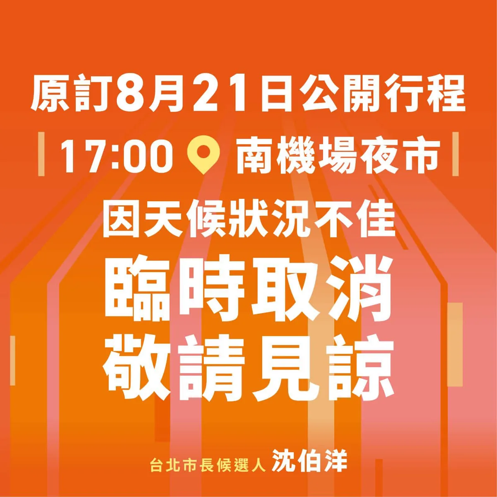

沈伯洋pumashen

@pumashen:今天在濱江市場 有一位小朋友 帶著爆炸頭假髮來 然後也有姊姊跟我說 懷念以前的頭髮 ⠀ 爆炸頭484才是正義！ ⠀ 謝謝市場熱情的大家 真不好意思 還有一些朋友沒有聊到 ⠀ 我之後還會再來！
Accounts
| 平台 | 帳號 | 已收錄貼文 | 最後更新 |
|---|---|---|---|
| 官網 | https://puma.taipei/ | 10 | 2026-08-21 00:00 |
| https://www.facebook.com/puma.taipei/ | 78 | 2026-08-23 13:10 | |
| https://www.facebook.com/pumashen/ | 41 | 2026-08-22 18:21 | |
| https://www.instagram.com/pumashen/ | 68 | 2026-08-23 13:13 | |
| Threads | https://www.threads.com/@pumashen | 98 | 2026-08-23 14:48 |
| YouTube | https://www.youtube.com/@PumaShen | 63 | 2026-08-22 18:22 |
| X | https://x.com/pumashen | 0 | — |
| LINE 官方帳號 | https://join.puma.taipei/line/UkfBBgZ2 | 0 | — |
Timeline
顯示 358 / 358 則
@pumashen:今天在濱江市場 有一位小朋友 帶著爆炸頭假髮來 然後也有姊姊跟我說 懷念以前的頭髮 ⠀ 爆炸頭484才是正義！ ⠀ 謝謝市場熱情的大家 真不好意思 還有一些朋友沒有聊到 ⠀ 我之後還會再來！

明天早上一起去運動~ ⠀ 8/24（一） ⠀ 07:00 📍前港公園


我發誓…

今天我和巧慧一進場 放眼望去都是認識的人！ ⠀ 有一起在弄春池 觀察生態的朋友， 一起打球的朋友， 一起熬夜讀書的朋友， 根本同學會XD ⠀ 看到大家超嗨， 差點不小心 拿麥克風開始爆料哈哈哈 ⠀ 三個月後， 我們再一起畫上 達摩的另一個眼睛！

從爭取好孕專車延長補助，到推動內科企業附設育兒設施與托兒津貼。從親子照顧、通學安全到社區建設， 王孝維議員把地方的每一個需要，都放在心上、做到實處。 ⠀ 未來我們會繼續並肩努力，一起讓港湖更好、讓台北順起來！
週末行程，走囉 ⠀ 這兩天天氣不穩，我要來去畫烏龜了～ ⠀ 8/22（六） 08:50 📍玉成公園福德宮 ⠀ 18:30 陳慈慧議員_星空電影院《馴龍高手》 📍芝山國小風雨操場 ⠀ 8/23（日） 09:00 📍濱江市場 ⠀ 17:00 劉耀仁議員_劉耀仁X沈伯洋見面會 📍環河福德宮 ⠀ 19:30 📍臨江街觀光夜市

因目前台北市持續發布大雨特報，考量大家安全與場地現況，今晚原定南機場夜市行程將先行取消。 ⠀ 雖然很可惜無法和大家見面，但大家的安全永遠是最重要的。造成不便，請大家見諒，也請留意天氣變化。期待天氣放晴後，再與大家相聚！
早上六點的碧湖公園… ⠀ 大家怎麼都… 起得那麼早！ ⠀ 明明是我要拜訪大家 結果變成大家在找我 真是不好意思！ ⠀ 有姊姊說要看爆炸頭 看來現在有爆炸頭派 以及短髮派了

給專家舞台，台北才能站上世界的舞台。 來到六師聯誼會，我看見六種不同領域的專業，卻有一個共同的核心：讓社會運作得更順暢。 醫師守護一座城市的健康、會計師奠定誠信經濟、建築師構築城市藍圖、律師守住法治的基礎。不同的專業，各自在自己的位置上，支撐一座城市每天的運轉。 而市府的責任，不是什麼都自己決定，而是讓最懂的人參與決定。 過去的城市治理，常常是政策做了，才找專業來解決問題。但真正好的治理，應該反過來：讓專業從一開始就進入決策，讓第一線的經驗成為政策的一部分。 真正好的市長，不需要每一件事都比別人懂，而是知道誰最懂，讓專業的人有位置、讓專業的判斷被尊重。 這也是為什麼，我提出成立「#台北研究院」。 台北需要一個屬於自己的城市級研究機構，集結不同領域的專業人才，持續研究台北的長期問題、提出城市發展策略，也直接和世界各大城市、研究機構建立連結。 市長有任期，但城市的規劃不能只有四年。 感謝各行各業的專家，一起運轉這座城市。也感謝醫師公會全聯會陳相國理事長、中醫師公會全聯會蘇守毅理事長、牙醫師公會全聯會陳世岳理事長、會計師公會全聯會張威珍理事長、全國建築師公會崔懋森理事長、全國律師聯合會李玲玲理事長，以及全體理監事。 未來，我會讓市府成為一個真正的跨專業平台，讓第一線的經驗進得了市府、專業的意見進得了決策。 讓專業有舞台，讓台北站上世界的舞台。 #台北順起來 #你的市長沈伯洋

爭取科技新創基地TTA2.0入駐士北科，中央地方攜手合作，加速北士科成為台北的AI產業聚落成形。 ⠀ 我與吳思瑤委員陪同行政院長卓榮泰視察臺灣科技新創基地TTA，並向院長爭取「TTA 2.0」進駐北士科，院長即刻讓國科會立案研究，獲得正面回應。 ⠀ 臺灣科技新創基地TTA是由民進黨政府成立，已培育超過1,190家新創團隊，吸引頂尖人才回流，但現有空間已經飽和。如今輝達確定進駐北士科，正是把國家級科研、新創團隊與國際人才帶進台北的最好時機，中央地方共同投入，打造完整的AI產業生態系。 ⠀ ▻ 爭取「TTA 2.0」科技新創基地進駐北士科，獲得中央支持 ⠀ 引進國家級新創孵化、科研、創投與國際鏈結資源，讓新創團隊有辦公空間，更能取得技術、人才、資金與國際市場的支持。 ⠀ ▻ 成立「台北研究院」，打造台北的「都市之腦」 ⠀ 借鏡首爾經驗，集結AI、都市規劃等跨領域人才，成為台北「都市之腦」，城市級智庫，進行政策模擬與長期研究，協助市府做出更精準的決策，也減輕第一線公務員的負擔。 ⠀ ▻ 首座「24小時數位圖書館」，讓知識真正不打烊 ⠀ 打造首座24小時圖書館，整合數位藝文資源，提供市民隨時閱讀、研究、學習與交流的公共空間。 ⠀ 中央已經展現誠意，地方更要主動對接，未來我會結合文化與國家級科研能量，打造兼具國際研發與智慧生活的首都AI生態系；中央地方攜手合作，加速北士科AI產業聚落成形。

明天早上一起去運動~ ⠀ 8/24（一） ⠀ 07:00 📍前港公園

謝謝劉品妡舉辦這場包場登島特別企劃，支持者中有親子家庭，暫時放下忙碌，進到電影院，享受難得的親子時光。 對父母來說，喘息不一定是暫時離開孩子，也可以是好好陪孩子看一場電影、聊聊天。因此，我提出「親子同行卡」，讓家長可以和孩子一起去劇場、書店等地方，還有「家長喘息服務」，增加臨時托育、到宅服務與心理諮商支持；「家長版1999」，讓育兒不再只是每個家庭獨自承擔，而是由整座城市一起陪伴。 品妡始終從孩子與家庭的生活出發。她提出成立「台北市兒童美術館」，讓藝術不只是偶爾參觀的展覽，而能走進孩子的日常，成為每個家庭都能親近的城市資源。她也注重人本交通。曾在議員團隊中，協調里長與店家，推動安居街、師大路、浦城街等巷弄改善。 這就是我們台北隊，有人負責整合市政、有人深耕地方，大家都朝著同一個方向努力。把生活餘裕還給家長，把安全與文化還給孩子，讓台北成為真正照顧人的城市。 請支持台北隊，把政策做到位，讓台北順起來！

@pumashen:我發誓…

@pumashen:今天我和巧慧一進場 放眼望去都是認識的人！ ⠀ 有一起在弄春池 觀察生態的朋友， 一起打球的朋友， 一起熬夜讀書的朋友， 根本同學會XD ⠀ 看到大家超嗨， 差點不小心 拿麥克風開始爆料哈哈哈 ⠀ 三個月後， 我們再一起畫上 達摩的另一個眼睛！

週末行程，走囉 ⠀ 這兩天天氣不穩，我要來去畫烏龜了～ ⠀ 8/22（六） 08:50 📍玉成公園福德宮 ⠀ 18:30 陳慈慧議員_星空電影院《馴龍高手》 📍芝山國小風雨操場 ⠀ 8/23（日） 09:00 📍濱江市場 ⠀ 17:00 劉耀仁議員_劉耀仁X沈伯洋見面會 📍環河福德宮 ⠀ 19:30 📍臨江街觀光夜市
因目前台北市持續發布大雨特報，考量大家安全與場地現況，今晚原定南機場夜市行程將先行取消。 ⠀ 雖然很可惜無法和大家見面，但大家的安全永遠是最重要的。造成不便，請大家見諒，也請留意天氣變化。期待天氣放晴後，再與大家相聚！

因目前台北市持續發布大雨特報，考量大家安全與場地現況，今晚原定南機場夜市行程將先行取消。 ⠀ 雖然很可惜無法和大家見面，但大家的安全永遠是最重要的。造成不便，請大家見諒，也請留意天氣變化。期待天氣放晴後，再與大家相聚！

@pumashen:早上六點的碧湖公園… ⠀ 大家怎麼都… 起得那麼早！ ⠀ 明明是我要拜訪大家 結果變成大家在找我 真是不好意思！ ⠀ 有姊姊說要看爆炸頭 看來現在有爆炸頭派 以及短髮派了

Advocating for TTA 2.0 to be based in NTCSP, with positive feedback from the central government!
明天早晚都來和大家見面～ ⠀ 8/21(五) ⠀ 06:00 📍碧湖公園 ⠀ 17:00 📍南機場夜市

@pumashen:明天早上一起去運動~ ⠀ 8/24（一） ⠀ 07:00 📍前港公園

I swear...

一個人的力量有限，但當一群人的力量匯聚起來，就能改變一個領域、一座城市，甚至一個國家。 ⠀ 我和蘇巧慧的雙北律師後援會今天成立。看到黃世杰學長、巧慧學姊、林國漳學長，以及這麼多一路走來的法律界前輩與夥伴，我想到自己從學生時代到現在，一直相信的一件事，改變，不能只靠一個人。 ⠀ 以前想推動司法改革，我就希望更多有理想的人一起進入法律界。有人當律師、有人進入司法、有人走進學界，大家在不同的位置努力。一路走到今天，我真的看見，法律界已經因為這些人的投入，慢慢變得不一樣。 ⠀ 後來出國念書，我又遇見更多不同領域的台灣人。有人在華盛頓、紐約、倫敦、東京，有人選擇回到台灣。大家分散在世界各地、社會的不同角落，但其實都在做同一件事： ⠀ 「站自己的位置，守護這個國家。」 ⠀ 而我，也一路「轉職」。從補習班老師、律師、大學教授，到民主實驗室、黑熊學院，再到今天走入政治。 ⠀ 每到一個新的位置，就遇見更多認同的人；力量一股股接上，最後慢慢匯聚成一股暖流。 ⠀ 過去，我們在不同的位置守護國家。 ⠀ 現在，是把這些力量匯聚起來，從守護國家，走向改變國家；從守護生活的地方，走向改變家鄉。 ⠀ 這是我今天最深的感受。 ⠀ 當越來越多人願意站出來、願意把自己的專業和力量放進來，就是我們改變城市、改變國家的時刻。 ⠀ 2026，請讓這股力量繼續匯流。 ⠀ 新世代扛起新時代，讓台灣一起變得更好。 #台北順起來 #你的市長沈伯洋

從爭取好孕專車延長補助，到推動內科企業附設育兒設施與托兒津貼。從親子照顧、通學安全到社區建設，王孝維議員把地方每一個需要，都放在心上、做到實處。⠀未來我們會繼續並肩努力，一起讓港湖更好、讓台北順起來！

@pumashen:週末行程，走囉 ⠀ 這兩天天氣不穩， 我要來去畫烏龜了～ ⠀ 8/22（六） 08:50 📍玉成公園福德宮 ⠀ 18:30 陳慈慧議員_星空電影院《馴龍高手》 📍芝山國小風雨操場 ⠀ 8/23（日） 09:00 📍濱江市場 ⠀ 17:00 劉耀仁議員_劉耀仁X沈伯洋見面會 📍環河福德宮 ⠀ 19:30 📍臨江街觀光夜市

@pumashen:因目前台北市持續發布大雨特報，考量大家安全與場地現況，今晚原定南機場夜市行程將先行取消。 ⠀ 雖然很可惜無法和大家見面，但大家的安全永遠是最重要的。造成不便，請大家見諒，也請留意天氣變化。期待天氣放晴後，再與大家相聚！
Councilor Lin Liang-chun x Paper Windmill Theatre

0821受訪 #受訪 #碧湖公園 #兒虐 #南機場夜市 #戰鬥陀螺

爭取 TTA 2.0進駐北士科，獲得中央正面回應！ ⠀ 我和 吳思瑤 委員陪同行政院 卓榮泰 院長視察臺灣新創科技基地(TTA)，也當面爭取國家級新創基地進駐北士科，院長立即請國科會立案研究。 ⠀ 輝達進駐後，北士科更要把國家級科研、新創與人才一起帶進來。我提出三項規劃： ⠀ ▻ 爭取TTA 2.0進駐北士科，引進國家級新創、科研、創投與國際資源 ▻ 建立台北研究院，打造台北的「都市之腦」 ▻ 首創24小時數位圖書館，24小時知識不打烊 ⠀ 中央地方攜手合作，加速北士科AI產業聚落成形。
@pumashen:明天早晚都來和大家見面～ ⠀ 8/21(五) ⠀ 06:00 📍碧湖公園 ⠀ 17:00 📍南機場夜市